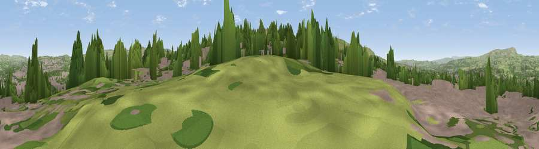

Viewpoint near Burnley
#26246 in England · top 57% of its area beats it · near BurnleyThe view, rendered

A 360° render of this exact spot computed from the terrain model, tree cover and land cover — summer colours, afternoon light, calibrated against photographs of famous viewpoints. Real trees, hedges and buildings will differ in detail.
The panorama
Grey silhouette: terrain skyline in each direction (720 bearings, Earth curvature and refraction included). Dashed green: skyline with trees (+15 m) and buildings (+8 m) as obstacles. Blue strip: how far the ground is visible on each bearing.
Where the view opens
Wedge length = distance to the farthest visible ground on that bearing (vegetation-aware). Rings at 10, 25 and 50 km.
What fills the view
43% grassland · 33% built-up · 24% woodland
Angular shares of the visible panorama (visual magnitude), not map area. Landscape diversity 0.47 (0–1 Shannon).
Key numbers
More beautiful places nearby
The staircase of upgrades: each row has a higher view potential than everything closer. Driving times are estimates from straight-line distance, calibrated against real road routing — check an actual route before setting out.
| Place | Direction | Drive | Score |
|---|---|---|---|
| Viewpoint near Burnley | E · 1 km | ~2 min | 47.6 |
| Viewpoint near Walk Mill | S · 2 km | ~5 min | 64.1 |
| Black Hill | SW · 3 km | ~8 min | 64.8 |
| Viewpoint near Loveclough | SW · 3 km | ~8 min | 68.8 |
| Great Hameldon | WSW · 5 km | ~11 min | 74.2 |
| Pendle Hill | NNW · 10 km | ~20 min | 76.5 |
| Viewpoint near Edenfield | S · 13 km | ~23 min | 77.5 |
| Darwen Hill | WSW · 19 km | ~32 min | 80.7 |
53.77845, -2.24921 · source: screening · position refined by local search. Computed location — check access rights before visiting.